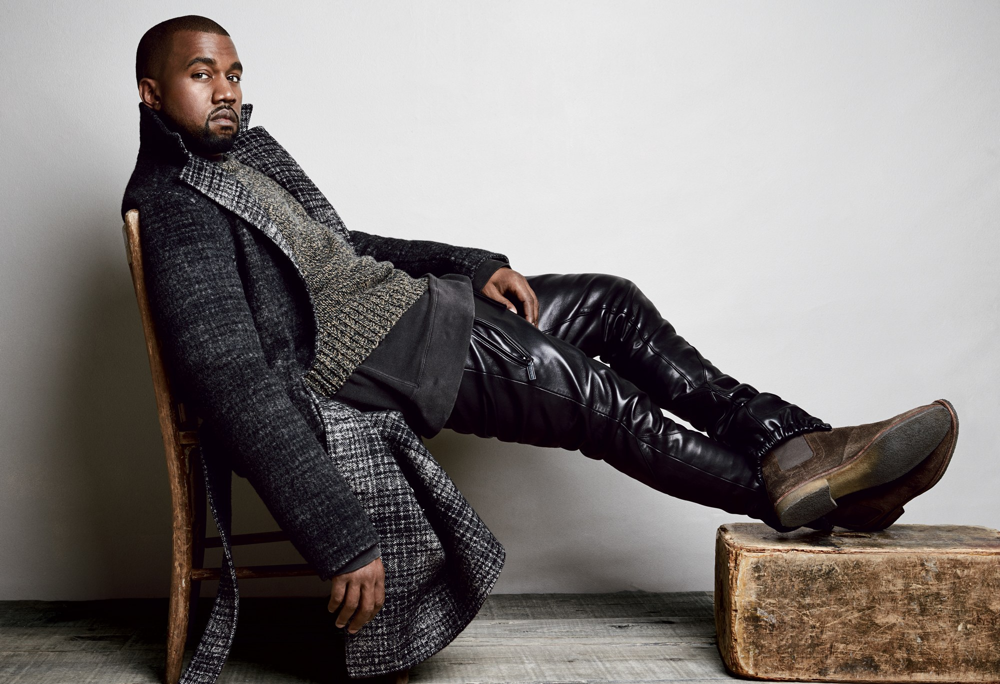

“What’s that jacket, Margiela?” said Kanye, and a generation rushed to buy black clothes with the most discreet of labels. Two Parisian exhibitions pull back the curtain, very slightly, on a Belgian enigma
As the avant-garde of late 20th-century fashion nears retirement, museums around the world have begun paying homage to some of its most unruly figures. In the past few years, the Costume Institute at the Metropolitan Museum of Art has canonized Alexander McQueen and Rei Kawakubo in solo shows, while Rick Owens just wrapped up a takeover of the Triennale di Milano. Now Belgian designer Martin Margiela is receiving similar treatment with two massive, simultaneous exhibitions in Paris: one at the Palais Galliera’s Museum of Fashion and the other at the Musée des Arts Décoratifs. Each exhibit comes with a monograph and merchandise, which seem to be available at every hip bookstore in Paris. Meanwhile, We Margiela, a new documentary by the designer’s recently deceased business partner, Jenny Meirens, is making the festival circuit. After a decade of waning relevance, Margiela appears to be back in the spotlight. “Margiela Galliera: 1989–2009,” at the Palais Galliera, spans the length of the designer’s career and portrays Margiela as an iconoclast who turned the fashion industry inside out, demanding that his conceptual clothes “speak for themselves.” “Margiela, les années Hermès,” at the MAD (and seen last year at the ModeMuseum in Antwerp), focuses on the 12 seasons Margiela spent designing ready-to-wear for Hermès, a partnership that brought his experimental sensibility into dialogue with a more luxurious and subtle body of work. Margiela is reluctant to speak publicly about his process or offer interpretations of his clothes, so it is notable that both shows credit him as the artistic director. Given Margiela’s hand in the exhibits, visitors may be tempted to view them not just as an evaluation of the designer’s legacy, but as a kind of autobiography.
Martin Margiela was born in 1957 in Leuven, Belgium, a small city near Brussels. In 1980, he graduated with a degree in fashion from the Royal Academy of Antwerp, shortly before a group of classmates who would become known as the Antwerp Six. He soon made his creative home in Paris, working as an assistant designer for Jean Paul Gaultier from 1984 to 1987. The following year, Margiela and Meirens, a boutique owner and early adopter of progressive design in Belgium, formed Maison Martin Margiela and held their first show, a spring/summer collection they called “Défilé.”
“Défilé” is where “Margiela Galliera: 1989–2009” begins. A long runway of white cotton leads visitors through the entrance of the exhibit, marked by a curtain of ripped plastic, into a room of veiled mannequins dressed in basic, white cotton shifts from the show. Upon closer inspection, the shifts appear to have been darted, torn, and reconstructed. On the mannequins’ feet are Margiela’s iconic Tabi boots, inspired by the Japanese socks that separate the big toe from the rest. Here, the white runway has been soiled with what look like bloody footprints, which Margiela would produce by having his models dip their Tabi boots in red paint before walking.